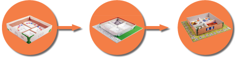

LATEST NEWS
My Visit of the world's largest trade fair and event highlight for interactive games and entertainment.
(08.21.2012)
Award ceremony of the European Games Award 2012
in Cologne.
(08.14.2012)
Participation in the event of the FFF Bayern and the firm
SKW Schwarz.
(06.15.2012)
- Turbo Tools
- Spoings House
- Mighty Monsters
- Grid Occupation
- History Scanners
Spoings House
Description
»The Spoings Samy and Bo have caused a wild chaos in the house. Help them both while cleaning the house before Mrs. Adar comes home!«
The Spoings-house is a board game for children (age 3) and can be played by 2 to 4 players.
In Sequence each player moves his Spoings figure using a color cube to clean the different rooms. For each correct object the player earns one reward point. The player with the most points wins.
Features
- Encourage and challenge children
- age-appropriate play with a learning effect
- Rules adapted to the developmental stage of the child
- Numerous extensions
Screenshots
{kind=link}
{kind=link}
{kind=link}
{kind=link}
Own mission field
Management of the board game team
The Spoings team was divided according to the task areas. The management of the board game team was taken over for the duration of a semester by me.
The tasks included: leadership, management of the implementation of the prototype, time and resource plans, transparency and communication within the team and to the board game remaining Spoings team, ongoing and final presentations.
Game design
The drafting of the final rules of the game was a collaborative process between Schanda Suzanne and me. As a next step, a test phase is planned with the target group.
Prototype implementation
3 prototypes were developed during the whole project process including the final prototype. Research, testing, and construction was carried out by me.
